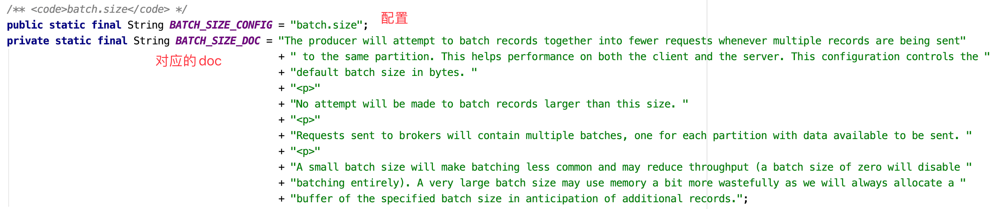
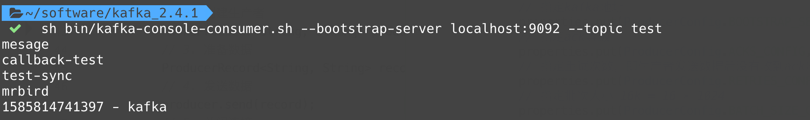

本节演示如何通过Java代码创建Kafka生产者、消费者和拦截器，依赖使用Kafka-clients。因为我安装的Kafka版本为2.4.1，所以依赖的版本也用2.4.1，避免兼容问题。新增一个maven项目，引入：
1 | <dependency> |
生产者API
Kafka 的 Producer 发送消息采用的是异步发送的方式。在消息发送的过程中，涉及到了两个线程——main 线程和 Sender 线程，以及一个线程共享变量——RecordAccumulator。main 线程将消息发送给 RecordAccumulator，Sender 线程不断从 RecordAccumulator 中拉取消息发送到 Kafka broker。
简单发送数据
创建ProducerDemo类，编写一个简单的生产者：
1 | public class ProducerDemo { |
无论是创建生产者还是消费者，我们都要指定配置。生产者配置可以使用常量类ProducerConfig指定，里面包含了生产者所有可用配置，并且包含对应的解释：

上面代码创建了一个kv都是String类型的生产者。配置了Kafka的地址，ack等级为all（在Kafka生产者一节中介绍过了，不赘述），重试次数为3。并且指定了生产者发送数据的批次为16k，等待时间为1ms。也就是说，要么发送的数据量达到了16k，要么等待时间超过了1ms才会真正地把数据发往Kafka。
此外，我们还指定RecordAccumulator缓冲区大小，kv序列化规则采用StringSerializer。
Kafka消息使用KafkaProducer对象表示，他有6个重载构造器，这在Kafka生产者介绍过了，这里我们指定了主题为test，消息内容为message。
运行这段代码之前，我们先启动zk和kafka：
1 | # 启动zk |
然后运行上面的程序，观察消费者输出：
带回调函数
KafkaProducer的send方法可以制定回调函数。回调函数会在 producer 收到 ack 时调用，为异步调用，该方法有两个参数，分别是RecordMetadata 和 Exception，如果 Exception 为 null，说明消息发送成功，如果Exception 不为 null，说明消息发送失败。
改造上面的send方法：
1 | ... |
运行该方法，控制台输出如下：
1 | 消息发送成功，主题Topic: test,分区Partition: 0,偏移量Offset: 4 |
消费者：
同步发送
如前面所说，Kafka 的 Producer 发送消息采用的是异步发送的方式，KafkaProducer的send方法返回Future对象，所以我们可以手动调用Future对象的get方法实现同步：
1 | // 3. 准备数据 |
自定义分区器
自定义分区器只需要要实现Partitioner接口：
1 | public class MyPartitioner implements Partitioner { |
partition方法中，我们可以根据主题topic，key值，序列化后的key值，value值，序列化后的value值，Kafka集群cluster信息，来个性化分区规则。
要使用自定义分区器，可通过配置类指定：
1 | // 指定自定义分区器 |
消费者API
Consumer 消费数据时的可靠性是很容易保证的，因为数据在 Kafka 中是持久化的，故不用担心数据丢失问题。
由于 consumer 在消费过程中可能会出现断电宕机等故障，consumer 恢复后，需要从故障前的位置的继续消费，所以 consumer 需要实时记录自己消费到了哪个 offset，以便故障恢复后继续消费。所以 offset 的维护是 Consumer 消费数据是必须考虑的问题。
自动提交offset
创建一个消费者，自动提交offset，演示消息消费：
1 | public class ConsumerDemo { |
启动消费者，然后再使用生产者发送mrbird消息到test主题，消费者控制台输出如下：
1 | ConsumerRecord(topic = test, partition = 0, leaderEpoch = 0, offset = 6, CreateTime = 1585811850841, serialized key size = -1, serialized value size = 6, headers = RecordHeaders(headers = [], isReadOnly = false), key = null, value = mrbird) |
手动提交offset
虽然自动提交 offset 十分便利，但由于其是基于时间提交的，开发人员难以把握 offset 提交的时机。因此 Kafka 还提供了手动提交 offset 的 API。
手动提交 offset 的方法有两种：分别是 commitSync（同步提交）和 commitAsync（异步提交）。两者的相同点是，都会将本次 poll 的一批数据最高的偏移量提交；不同点是，commitSync 阻塞当前线程，一直到提交成功，并且会自动失败重试（由不可控因素导致，也会出现提交失败）；而 commitAsync 则没有失败重试机制，故有可能提交失败。
由于同步提交 offset 有失败重试机制，故更加可靠，以下为同步提交 offset 的示例：
1 | public class ConsumerDemo { |
commitSync()也可以指定超时时间。
虽然同步提交 offset 更可靠一些，但是由于其会阻塞当前线程，直到提交成功。因此吞吐量会收到很大的影响。更多的情况下，会选用异步提交 offset 的方式。
以下为异步提交 offset 的示例：
1 | public class ConsumerDemo { |
commitAsync()可以指定回调：
1 | consumer.commitAsync((offsets, exception) -> { |
拦截器
Producer 拦截器(interceptor)是在 Kafka 0.10 版本被引入的，interceptor 使得用户在消息发送前以及 producer 回调逻辑前有机会对消息做一些定制化需求，比如修改消息等。同时，producer 允许用户指定多个 interceptor按顺序形成一个拦截器链(interceptor chain)。Intercetpor 的实现接口是 org.apache.kafka.clients.producer.ProducerInterceptor，其定义的方法包括：
- configure(configs)：获取配置信息和初始化数据时调用；
onSend(ProducerRecord)：在消息被序列化以及计算分区前调用该方法。用户可以在该方法中对消息做任何操作，但最好不要修改消息所属的 topic 和分区，否则会影响目标分区的计算；
onAcknowledgement(RecordMetadata, Exception)：在返回ack时，或者发送失败时调用该方法。
- close：关闭 interceptor，主要用于执行一些资源清理工作。
下面举个自定义拦截器的例子：定义一个拦截器链，包含两个拦截器MessageFormatInterceptor和CountInterceptor，分别用于消息加工和统计消息发送成功和失败的笔数。
定义MessageFormatInterceptor：
1 | public class MessageFormatInterceptor implements ProducerInterceptor<String, String> { |
定义CountInterceptor：
1 | public class CountInterceptor implements ProducerInterceptor<String, String> { |
其实这两个功能完全可以由一个过滤器来完成，这里仅仅是为了演示过滤器链。
在生产者配置中指定这个过滤器链：
1 | public class ProducerDemo { |
运行程序，控制台输出：
1 | 成功笔数: 1 |
消费者：

「尚硅谷大数据技术之 Kafka」 学习笔记